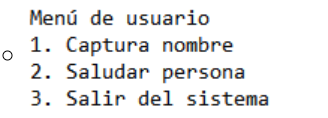

Tema 1: Taller de variables e impresión
1. Realizar un programa el cual solicite su nombre y apellidos.
2. Realizar un programa el cual solicite su nombre, apellidos, edad y estatura.
3. Realizar un programa el cual solicite su nombre y apellidos, también debe capturar nombre y apellidos de su padre y madre. Al finalizar debe imprimir en pantalla el siguiente mensaje "Yo [Nombre Completo], soy hijo de [Nombre de la Madre] y [Nombre del Padre].
4. Realizar un programa el cual solicite el nombre de una ciudad capital y el país. Al finalizar debe imprimir en pantalla el siguiente mensaje "La ciudad [Nombre de la Ciudad], es la capital del país [Nombre del País]
5. Realizar un programa el cual solicite el nombre de su mascota, edad de la mascota, el tipo de mascota y su nombre completo. Al finalizar el sistema debe e imprimir en pantalla el siguiente mensaje: [Nombre de Mascota] es un(a) [Tipo de Mascota], el cual, tiene [Edad de la Mascota] años de edad y [Nombre Completo] es actualmente su dueño(a).
Tema 2:Taller de condicionales
1. Realizar un programa en el cual se solicite la edad de una persona. Si la persona es mayor o igual a 18 años, deberá mostrar en pantalla: Usted es mayor de edad.
2. Realizar un programa en el cual se solicite la edad de una persona. Si la persona es menor a 18 años, deberá mostrar en pantalla: Usted aún es un niño(a).
3. Realizar un programa en el cual se solicite el nombre, apellidos y edad de la persona. Si la persona es mayor o igual a 18 años, entonce se deberá imprimir en pantalla [Nombre completo] usted es mayor de edad, por lo tanto puede entrar a la fiesta. Si la edad de la persona es menor que 18 años, entonces, deberá imprimirse el siguiente mensaje: [Nombre completo] usted es menor de edad, por lo tanto, no puede entrar a la fiesta, por favor devuélvase a su casa.
4. Realizar un programa en el cual se solicite el nombre, apellidos y edad de la persona. Si la persona es mayor o igual a 18 años, entonce se deberá imprimir en pantalla [Nombre completo] usted es mayor de edad, por lo tanto puede entrar a la fiesta. Si la edad de la persona es menor que 18 años, entonces, deberá imprimirse el siguiente mensaje: [Nombre completo] usted es menor de edad, por lo tanto, no puede entrar a la fiesta, por favor devuélvase a su casa.
5. La Droguería Mi Salud presta sus servicios en la localidad de Suba y requiere una aplicación para poder facturar los productos que vende a sus clientes y para ello, los productos tienen unas características que deben indicársele al cliente para que pueda escoger el producto a comprar. Para cada cliente, se tienen las opciones de compra de producto, consulta de precios por producto y devoluciones en caso de que se presenten.
6. El taller de motos "El Maquinista" recibe motocicletas de alto cilindraje para realizar las respectivas revisiones y requiere una aplicación que le permita registrar los servicios generados a sus clientes. Para cada motocicleta se debe tener registro del ingreso al taller y las observaciones por parte del cliente. También debe existir registro de salida del taller con las novedades y otra de arreglos hechos por el mecánico en caso de que se requiera inventariar cambios repuestos en la motocicleta al entregarla.
7. La Secretaría de Salud Municipal requiere de una aplicación que le permita calcular el IMC (Índice de masa corporal) y requiere los datos peso en kilogramos y estatura en metros Para cada persona encuestada adicional a los datos suministrados, debe mostrar el resultado para cada uno y establecer en qué rango se encuentra (bajo peso, normal, sobrepeso y obeso).
8. El pastelero Don Carlos es el mejor pastelero de la ciudad y requiere una aplicación que le permita registrar los pedidos de los clientes en cuanto a las tortas que realiza. Cada torta tiene unas características propias como sabor, cantidad (porciones) y decoraciones). Se requiere que la aplicación permita registrar los pedidos, las tortas disponibles y las ventas que se registren diariamente.
9. El profesor de geometría está explicando a sus estudiantes las fórmulas para calcular el área de diferentes figuras geométricas, para ello requiere una aplicación que le facilite el ejercicio solicitándole los valores al estudiante. La aplicación debe permitir que el estudiante seleccione si desea calcular el área de un rectángulo, triángulo o trapecio. No olvide solicitar los datos necesarios para realizar cada cálculo y mostrar su respectivo resultado.
10. El banco "Su banco fiel" es un banco que inicia sus actividades financieras y necesita una aplicación para llevar las cuentas de sus usuarios; por lo tanto, se sugiere que la cuenta tenga los atributos titular y cantidad. Para cada cliente las cuentas permitirán realizar ingresos, retiros o consultas de valor. En los ingresos no se pueden insertar valores negativos y para los retiros el valor no puede ser mayor al valor que tiene en la cuenta.
Tema 3:Taller de ciclos
1. Realizar la siguiente figura por medio del ciclo Para.
2. Realizar la siguiente figura por medio del ciclo Mientras - Hacer.
3. Realizar la siguiente figura por medio del ciclo Repetir - Hasta Que
4. Se requiere un programa que pueda crear la tabla de multiplicar del número que el usuario indique por medio del ciclo Para; esta debe ser impresa del 1 al 10. Ejemplo, si el usuario indica que desea crear la tabla del 5, entonces el resultado debería ser el siguiente:
5. Utilizando el ciclo que usted desee, crear un menú de ejecución infinita hasta que el usuario desee terminar dicho ciclo.
6. Se está creando una aplicación que va a estar conectada con un prototipo que permita almacenar contactos telefónicos en el dispositivo. Para ello cada contacto debe contener nombre completo, teléfono y organización. Se requiere que la aplicación permita añadir 3 contactos verificando que el número no esté almacenado, buscar contactos almacenados y eliminar contactos si el usuario lo requiere. Recuerde que el sistema debe terminar cuando el usuario así lo indique.
7. El parqueadero "El guardián" presta sus servicios de parqueadero nocturno para los usuarios del barrio y requiere una aplicación que permita registrar los vehículos que se cuidan en estas instalaciones. Se sugiere que el parqueadero tenga los atributos del vehículo como son, placa y marca, y los datos del cliente como son nombre completo y número de teléfono. Para cada vehículo se debe permitir la opción de ingresar al parqueadero, retirar del parqueadero y consultar si un vehículo se encuentra en el parqueadero. Recuerde que el sistema debe terminar cuando el usuario así lo indique. Tenga en presente que el parqueadero solo puede almacenar máximo 5 vehículos.
8. La escuela automovilística "El Maestro" requiere una aplicación que permita registrar a sus clientes en los cursos de enseñanza automovilística y establecer quienes lo han aprobado para continuar con el trámite de adquirir la licencia de conducción. Para cada usuario se debe permitir registrar su ingreso al curso, consultar usuarios que hayan presentado el curso y resultados de la prueba del curso (si fueron aprobados o no). Recuerde que el sistema debe terminar cuando el usuario así lo indique. Tenga presente que la escuela tiene capacidad máxima de gestionar 8 usuarios en su totalidad.
Tema 4:Taller de Arreglos
2. Crear un vector de tipo Entero con 5 posiciones, llenarlo con información solicitada al usuario. Después de recoger toda la información, se requiere imprimir el índice de cada posición en el arreglo con su valor de la siguiente manera:
- [0] = 55
- [1] = 99
- [2] = 11
- [3] = 56
- [4] = 69
2. Crear un arreglo de números enteros de 20 posiciones, el cual, debe ser llenado con números aleatorios entre 1 y 100; después de haber llenado dicho arreglo, se debe volver a recorrer utilizando un ciclo diferente al que se usó para llenarse e imprimir los números pares e impares. Ejemplo
- Números pares: 2, 4, 6, 8, 10
- Números impares: 1, 3, 5, 7, 9
3.Imprimir los números primos del 1 al 1000, el resultado debe ser buscado de forma matemática..
4. Dada la siguiente matriz bidimensional, el cual debe de quemar en el código
- 01 02 03 04 05
- 06 07 08 09 10
- 11 12 13 14 15
- 16 17 18 19 20
Utilizando el conocimiento adquirido, a excepción de hacerlo de forma manual, imprima la siguiente matriz bidimensional.
- 01 02 03 04 05
- 10 09 08 07 06
- 11 12 13 14 15
- 20 19 18 17 16
5. Se debe de imprimir el siguiente cuadro
El usuario deberá insertar la fila y columna de la cual desea ver el resultado, el resultado de cada celda debe estar previamente calculado en una matriz bidimensional la cual cada resultado obedecerá a la fila y columna insertada por el usuario.
Tema 1: Taller de variables e impresión
1. Realizar un programa el cual solicite su nombre y apellidos.
2. Realizar un programa el cual solicite su nombre, apellidos, edad y estatura.
3. Realizar un programa el cual solicite su nombre y apellidos, también debe capturar nombre y apellidos de su padre y madre. Al finalizar debe imprimir en pantalla el siguiente mensaje "Yo [Nombre Completo], soy hijo de [Nombre de la Madre] y [Nombre del Padre].
4. Realizar un programa el cual solicite el nombre de una ciudad capital y el país. Al finalizar debe imprimir en pantalla el siguiente mensaje "La ciudad [Nombre de la Ciudad], es la capital del país [Nombre del País]
5. Realizar un programa el cual solicite el nombre de su mascota, edad de la mascota, el tipo de mascota y su nombre completo. Al finalizar el sistema debe e imprimir en pantalla el siguiente mensaje: [Nombre de Mascota] es un(a) [Tipo de Mascota], el cual, tiene [Edad de la Mascota] años de edad y [Nombre Completo] es actualmente su dueño(a).